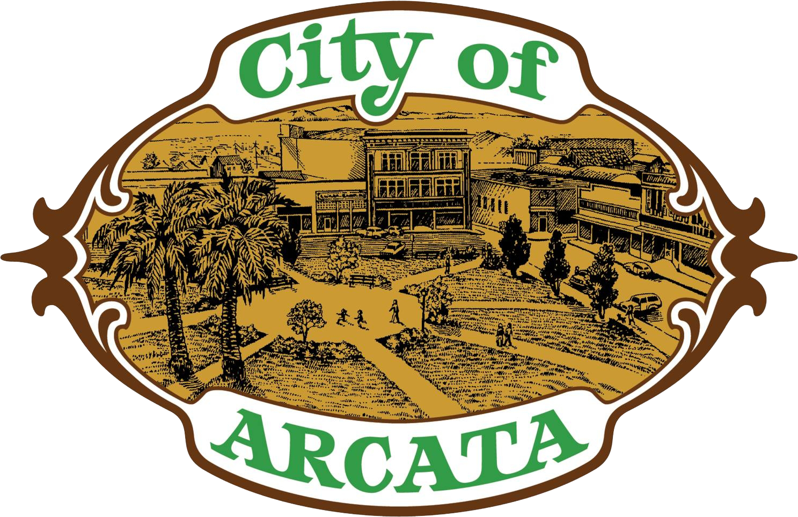

The Arcata Marsh and Wildlife Sanctuary is home to the City of Arcata’s innovative wastewater treatment facility. The sanctuary is 307 acres, including freshwater marshes, salt marsh, tidal sloughs, grassy uplands, mudflats, brackish marsh, approximately 5 miles of walking and biking paths and an Interpretive Center. By integrating conventional wastewater treatment with the natural processes of constructed wetlands, Arcata has succeeded in turning wastewater into a resource.
Located at the north end of Humboldt Bay, the sanctuary is situated along the Pacific Flyway, a major migratory route for thousands of birds that breed in the far north and winter in California, Mexico and Central and South America. The Arcata Marsh and Wildlife Sanctuary has probably the highest bird populated coastal site between Bodega Harbor and Washington, with literally thousands of birding visitors annually and organized bird walks held at least weekly year-round. The Marsh has hosted over 300 bird species.
Amphitheater
Bird Blinds
Boat Launch
Dog Poop Bags
Arcata Marsh Interpretive Center
Parking Areas
Restroom
Trail Heads